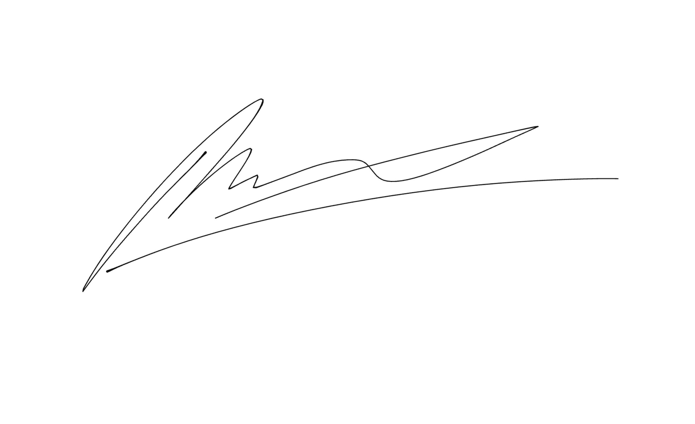

I’m Ryan McComb. I’m a high school student in Evanston, Illinois. I work on elections -- I’m on the decision desk at VoteHub, doing race calls and building data pipelines. I built IL9Cast, a forecasting aggregator for the Illinois 9th Congressional District primary. I write and photograph for The Evanstonian, and I swim competitively. I was the volunteer finance lead for Biss for Congress.
